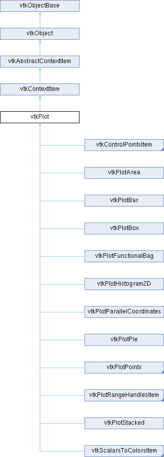

|
Etrek
|
|
Etrek
|
Abstract class for 2D plots. More...
#include <vtkPlot.h>

Public Member Functions | |
| vtkTypeMacro (vtkPlot, vtkContextItem) | |
| void | PrintSelf (ostream &os, vtkIndent indent) override |
| void | Update () override |
| virtual bool | PaintLegend (vtkContext2D *painter, const vtkRectf &rect, int legendIndex) |
| virtual vtkStdString | GetTooltipLabel (const vtkVector2d &plotPos, vtkIdType seriesIndex, vtkIdType segmentIndex) |
| virtual vtkIdType | GetNearestPoint (const vtkVector2f &point, const vtkVector2f &tolerance, vtkVector2f *location, vtkIdType *segmentId) |
| virtual bool | SelectPoints (const vtkVector2f &min, const vtkVector2f &max) |
| virtual bool | SelectPointsInPolygon (const vtkContextPolygon &polygon) |
| virtual void | SetLabel (const vtkStdString &label) |
| virtual vtkStdString | GetLabel () |
| virtual void | SetLabels (vtkStringArray *labels) |
| virtual vtkStringArray * | GetLabels () |
| virtual int | GetNumberOfLabels () |
| vtkStdString | GetLabel (vtkIdType index) |
| void | SetIndexedLabels (vtkStringArray *labels) |
| virtual vtkStringArray * | GetIndexedLabels () |
| vtkContextMapper2D * | GetData () |
| virtual vtkTable * | GetInput () |
| VTK_MARSHALEXCLUDE (VTK_MARSHAL_EXCLUDE_REASON_IS_INTERNAL) | |
| vtkAlgorithmOutput * | GetInputConnection () |
| virtual void | SetInputArray (int index, const vtkStdString &name) |
| virtual void | GetBounds (double bounds[4]) |
| virtual void | GetUnscaledInputBounds (double bounds[4]) |
| bool | Hit (const vtkContextMouseEvent &mouse) override |
| virtual bool | UpdateCache () |
| vtkSetMacro (LegendVisibility, bool) | |
| vtkGetMacro (LegendVisibility, bool) | |
| vtkBooleanMacro (LegendVisibility, bool) | |
| virtual void | SetTooltipLabelFormat (const vtkStdString &label) |
| virtual vtkStdString | GetTooltipLabelFormat () |
| virtual void | SetTooltipNotation (int notation) |
| virtual int | GetTooltipNotation () |
| virtual void | SetTooltipPrecision (int precision) |
| virtual int | GetTooltipPrecision () |
| virtual void | SetColor (unsigned char r, unsigned char g, unsigned char b, unsigned char a) |
| virtual void | SetColor (unsigned char r, unsigned char g, unsigned char b) |
| virtual void | SetColorF (double r, double g, double b, double a) |
| virtual void | SetColorF (double r, double g, double b) |
| virtual void | GetColor (unsigned char rgb[3]) |
| void | GetColorRGBA (unsigned char rgba[4]) |
| virtual void | GetColorF (double rgb[3]) |
| virtual void | SetWidth (float width) |
| @ | |
| virtual float | GetWidth () |
| void | SetPen (vtkPen *pen) |
| vtkPen * | GetPen () |
| void | SetBrush (vtkBrush *brush) |
| vtkBrush * | GetBrush () |
| void | SetSelectionPen (vtkPen *pen) |
| vtkPen * | GetSelectionPen () |
| void | SetSelectionBrush (vtkBrush *brush) |
| vtkBrush * | GetSelectionBrush () |
| vtkGetMacro (UseIndexForXSeries, bool) | |
| vtkSetMacro (UseIndexForXSeries, bool) | |
| virtual void | SetInputData (vtkTable *table) |
| virtual void | SetInputData (vtkTable *table, const vtkStdString &xColumn, const vtkStdString &yColumn) |
| void | SetInputData (vtkTable *table, vtkIdType xColumn, vtkIdType yColumn) |
| VTK_MARSHALEXCLUDE (VTK_MARSHAL_EXCLUDE_REASON_IS_INTERNAL) | |
| virtual void | SetInputConnection (vtkAlgorithmOutput *input) |
| void | SetXAxisInputArrayToProcess (const std::string &name) |
| std::string | GetXAxisInputArrayToProcess () |
| void | SetYAxisInputArrayToProcess (const std::string &name) |
| std::string | GetYAxisInputArrayToProcess () |
| vtkSetMacro (Selectable, bool) | |
| vtkGetMacro (Selectable, bool) | |
| vtkBooleanMacro (Selectable, bool) | |
| virtual void | SetSelection (vtkIdTypeArray *id) |
| vtkGetObjectMacro (Selection, vtkIdTypeArray) | |
| vtkGetObjectMacro (XAxis, vtkAxis) | |
| virtual void | SetXAxis (vtkAxis *axis) |
| vtkGetObjectMacro (YAxis, vtkAxis) | |
| virtual void | SetYAxis (vtkAxis *axis) |
| void | SetShiftScale (const vtkRectd &shiftScale) |
| vtkRectd | GetShiftScale () |
| virtual void | SetProperty (const vtkStdString &property, const vtkVariant &var) |
| virtual vtkVariant | GetProperty (const vtkStdString &property) |
| Public Member Functions inherited from vtkContextItem | |
| vtkTypeMacro (vtkContextItem, vtkAbstractContextItem) | |
| virtual void | SetTransform (vtkContextTransform *) |
| vtkGetMacro (Opacity, double) | |
| vtkSetMacro (Opacity, double) | |
| Public Member Functions inherited from vtkAbstractContextItem | |
| vtkTypeMacro (vtkAbstractContextItem, vtkObject) | |
| virtual bool | Paint (vtkContext2D *painter) |
| virtual bool | PaintChildren (vtkContext2D *painter) |
| virtual void | ReleaseGraphicsResources () |
| vtkIdType | AddItem (vtkAbstractContextItem *item) |
| bool | RemoveItem (vtkAbstractContextItem *item) |
| bool | RemoveItem (vtkIdType index) |
| vtkAbstractContextItem * | GetItem (vtkIdType index) |
| vtkIdType | GetItemIndex (vtkAbstractContextItem *item) |
| vtkIdType | GetNumberOfItems () VTK_FUTURE_CONST |
| void | ClearItems () |
| vtkIdType | Raise (vtkIdType index) |
| virtual vtkIdType | StackAbove (vtkIdType index, vtkIdType under) |
| vtkIdType | Lower (vtkIdType index) |
| virtual vtkIdType | StackUnder (vtkIdType child, vtkIdType above) |
| virtual vtkAbstractContextItem * | GetPickedItem (const vtkContextMouseEvent &mouse) |
| virtual bool | MouseEnterEvent (const vtkContextMouseEvent &mouse) |
| virtual bool | MouseMoveEvent (const vtkContextMouseEvent &mouse) |
| virtual bool | MouseLeaveEvent (const vtkContextMouseEvent &mouse) |
| virtual bool | MouseButtonPressEvent (const vtkContextMouseEvent &mouse) |
| virtual bool | MouseButtonReleaseEvent (const vtkContextMouseEvent &mouse) |
| virtual bool | MouseDoubleClickEvent (const vtkContextMouseEvent &mouse) |
| virtual bool | MouseWheelEvent (const vtkContextMouseEvent &mouse, int delta) |
| virtual bool | KeyPressEvent (const vtkContextKeyEvent &key) |
| virtual bool | KeyReleaseEvent (const vtkContextKeyEvent &key) |
| virtual void | SetScene (vtkContextScene *scene) |
| vtkContextScene * | GetScene () |
| virtual void | SetParent (vtkAbstractContextItem *parent) |
| vtkAbstractContextItem * | GetParent () |
| virtual vtkVector2f | MapToParent (const vtkVector2f &point) |
| virtual vtkVector2f | MapFromParent (const vtkVector2f &point) |
| virtual vtkVector2f | MapToScene (const vtkVector2f &point) |
| virtual vtkVector2f | MapFromScene (const vtkVector2f &point) |
| virtual bool | GetVisible () |
| vtkSetMacro (Visible, bool) | |
| vtkGetMacro (Interactive, bool) | |
| vtkSetMacro (Interactive, bool) | |
| Public Member Functions inherited from vtkObject | |
| vtkBaseTypeMacro (vtkObject, vtkObjectBase) | |
| virtual void | DebugOn () |
| virtual void | DebugOff () |
| bool | GetDebug () |
| void | SetDebug (bool debugFlag) |
| virtual void | Modified () |
| virtual vtkMTimeType | GetMTime () |
| void | RemoveObserver (unsigned long tag) |
| void | RemoveObservers (unsigned long event) |
| void | RemoveObservers (const char *event) |
| void | RemoveAllObservers () |
| vtkTypeBool | HasObserver (unsigned long event) |
| vtkTypeBool | HasObserver (const char *event) |
| vtkTypeBool | InvokeEvent (unsigned long event) |
| vtkTypeBool | InvokeEvent (const char *event) |
| std::string | GetObjectDescription () const override |
| unsigned long | AddObserver (unsigned long event, vtkCommand *, float priority=0.0f) |
| unsigned long | AddObserver (const char *event, vtkCommand *, float priority=0.0f) |
| vtkCommand * | GetCommand (unsigned long tag) |
| void | RemoveObserver (vtkCommand *) |
| void | RemoveObservers (unsigned long event, vtkCommand *) |
| void | RemoveObservers (const char *event, vtkCommand *) |
| vtkTypeBool | HasObserver (unsigned long event, vtkCommand *) |
| vtkTypeBool | HasObserver (const char *event, vtkCommand *) |
| template<class U, class T> | |
| unsigned long | AddObserver (unsigned long event, U observer, void(T::*callback)(), float priority=0.0f) |
| template<class U, class T> | |
| unsigned long | AddObserver (unsigned long event, U observer, void(T::*callback)(vtkObject *, unsigned long, void *), float priority=0.0f) |
| template<class U, class T> | |
| unsigned long | AddObserver (unsigned long event, U observer, bool(T::*callback)(vtkObject *, unsigned long, void *), float priority=0.0f) |
| vtkTypeBool | InvokeEvent (unsigned long event, void *callData) |
| vtkTypeBool | InvokeEvent (const char *event, void *callData) |
| virtual void | SetObjectName (const std::string &objectName) |
| virtual std::string | GetObjectName () const |
| Public Member Functions inherited from vtkObjectBase | |
| const char * | GetClassName () const |
| virtual vtkTypeBool | IsA (const char *name) |
| virtual vtkIdType | GetNumberOfGenerationsFromBase (const char *name) |
| virtual void | Delete () |
| virtual void | FastDelete () |
| void | InitializeObjectBase () |
| void | Print (ostream &os) |
| void | Register (vtkObjectBase *o) |
| virtual void | UnRegister (vtkObjectBase *o) |
| int | GetReferenceCount () |
| void | SetReferenceCount (int) |
| bool | GetIsInMemkind () const |
| virtual void | PrintHeader (ostream &os, vtkIndent indent) |
| virtual void | PrintTrailer (ostream &os, vtkIndent indent) |
| virtual bool | UsesGarbageCollector () const |
Static Public Member Functions | |
| static void | FilterSelectedPoints (vtkDataArray *points, vtkDataArray *selectedPoints, vtkIdTypeArray *selectedIds) |
| Static Public Member Functions inherited from vtkObject | |
| static vtkObject * | New () |
| static void | BreakOnError () |
| static void | SetGlobalWarningDisplay (vtkTypeBool val) |
| static void | GlobalWarningDisplayOn () |
| static void | GlobalWarningDisplayOff () |
| static vtkTypeBool | GetGlobalWarningDisplay () |
| Static Public Member Functions inherited from vtkObjectBase | |
| static vtkTypeBool | IsTypeOf (const char *name) |
| static vtkIdType | GetNumberOfGenerationsFromBaseType (const char *name) |
| static vtkObjectBase * | New () |
| static void | SetMemkindDirectory (const char *directoryname) |
| static bool | GetUsingMemkind () |
Protected Member Functions | |
| vtkStdString | GetNumber (double position, vtkAxis *axis) |
| virtual bool | CacheRequiresUpdate () |
| virtual void | TransformScreenToData (const vtkVector2f &in, vtkVector2f &out) |
| virtual void | TransformDataToScreen (const vtkVector2f &in, vtkVector2f &out) |
| virtual void | TransformScreenToData (double inX, double inY, double &outX, double &outY) |
| virtual void | TransformDataToScreen (double inX, double inY, double &outX, double &outY) |
| Protected Member Functions inherited from vtkAbstractContextItem | |
| virtual void | ReleaseGraphicsCache () |
| Protected Member Functions inherited from vtkObject | |
| void | RegisterInternal (vtkObjectBase *, vtkTypeBool check) override |
| void | UnRegisterInternal (vtkObjectBase *, vtkTypeBool check) override |
| void | InternalGrabFocus (vtkCommand *mouseEvents, vtkCommand *keypressEvents=nullptr) |
| void | InternalReleaseFocus () |
| Protected Member Functions inherited from vtkObjectBase | |
| virtual void | ReportReferences (vtkGarbageCollector *) |
| vtkObjectBase (const vtkObjectBase &) | |
| void | operator= (const vtkObjectBase &) |
Additional Inherited Members | |
| Static Protected Member Functions inherited from vtkObjectBase | |
| static vtkMallocingFunction | GetCurrentMallocFunction () |
| static vtkReallocingFunction | GetCurrentReallocFunction () |
| static vtkFreeingFunction | GetCurrentFreeFunction () |
| static vtkFreeingFunction | GetAlternateFreeFunction () |
|
protectedvirtual |
Test if the internal cache requires an update.
Reimplemented in vtkPlotBar, vtkPlotFunctionalBag, vtkPlotPoints, and vtkPlotStacked.
|
static |
Clamp the given 2D pos into the provided bounds Return true if the pos has been clamped, false otherwise.
|
static |
Utility function that fills up selectedPoints with tuples from points. Indices from selectedIds are used to index into points.
|
inlinevirtual |
Get the bounds for this plot as (Xmin, Xmax, Ymin, Ymax).
See GetUnscaledInputBounds for more information.
Reimplemented in vtkControlPointsItem, vtkPlotArea, vtkPlotBar, vtkPlotBarRangeHandlesItem, vtkPlotFunctionalBag, vtkPlotHistogram2D, vtkPlotParallelCoordinates, vtkPlotPoints, vtkPlotRangeHandlesItem, vtkPlotStacked, vtkRangeHandlesItem, and vtkScalarsToColorsItem.
|
virtual |
Get the plot color as integer rgb values (comprised between 0 and 255)
|
virtual |
Get the plot color as floating rgb values (comprised between 0.0 and 1.0)
Reimplemented in vtkPlotBar, and vtkPlotStacked.
| vtkContextMapper2D * vtkPlot::GetData | ( | ) |
Get the data object that the plot will draw.
|
virtual |
Get the indexed labels array.
|
virtual |
Get the input table used by the plot.
|
virtual |
Get the label of this plot.
| vtkStdString vtkPlot::GetLabel | ( | vtkIdType | index | ) |
Get the label at the specified index.
|
virtual |
Get the plot labels. If this array has a length greater than 1 the index refers to the stacked objects in the plot. See vtkPlotBar for example.
Reimplemented in vtkPlotBag, vtkPlotBar, vtkPlotBox, and vtkPlotStacked.
|
virtual |
Function to query a plot for the nearest point to the specified coordinate. Returns the index of the data series with which the point is associated, or -1 if no point was found.
Reimplemented in vtkPlotArea, vtkPlotBar, vtkPlotBox, vtkPlotFunctionalBag, vtkPlotHistogram2D, vtkPlotPie, vtkPlotPoints, vtkPlotStacked, and vtkScalarsToColorsItem.
|
protected |
Get the properly formatted number for the supplied position and axis.
|
virtual |
Get the number of labels associated with this plot.
|
virtual |
Generate and return the tooltip label string for this plot The segmentIndex parameter is ignored, except for vtkPlotBar
Reimplemented in vtkPlotArea, vtkPlotBag, vtkPlotBar, vtkPlotHistogram2D, and vtkScalarsToColorsItem.
|
inlinevirtual |
Provide un-log-scaled bounds for the plot inputs.
This function is analogous to GetBounds() with 2 exceptions:
For example, vtkPlotBar's GetBounds() method will swap axis bounds when its orientation is vertical while its GetUnscaledInputBounds() will not swap axis bounds.
This method is provided so user interfaces can determine whether or not to allow log-scaling of a particular vtkAxis.
Subclasses of vtkPlot are responsible for implementing this function to transform input plot data.
The returned bounds are stored as (Xmin, Xmax, Ymin, Ymax).
Reimplemented in vtkPlotBar, vtkPlotFunctionalBag, vtkPlotPoints, and vtkPlotStacked.
|
virtual |
Get the width of the line.
Reimplemented in vtkPlotBar.
|
overridevirtual |
Returns true if the supplied x, y coordinate is inside the item.
Reimplemented from vtkAbstractContextItem.
Reimplemented in vtkPlotRangeHandlesItem.
|
virtual |
Paint legend event for the plot, called whenever the legend needs the plot items symbol/mark/line drawn. A rect is supplied with the lower left corner of the rect (elements 0 and 1) and with width x height (elements 2 and 3). The plot can choose how to fill the space supplied. The index is used by Plots that return more than one label.
Reimplemented in vtkPlotArea, vtkPlotBag, vtkPlotBar, vtkPlotBox, vtkPlotFunctionalBag, vtkPlotLine, vtkPlotParallelCoordinates, vtkPlotPie, vtkPlotPoints, and vtkPlotStacked.
|
overridevirtual |
Methods invoked by print to print information about the object including superclasses. Typically not called by the user (use Print() instead) but used in the hierarchical print process to combine the output of several classes.
Reimplemented from vtkContextItem.
Reimplemented in vtkPlotArea, vtkPlotBag, vtkPlotBar, vtkPlotBarRangeHandlesItem, vtkPlotBox, vtkPlotFunctionalBag, vtkPlotHistogram2D, vtkPlotLine, vtkPlotParallelCoordinates, vtkPlotPie, vtkPlotPoints, vtkPlotRangeHandlesItem, vtkPlotStacked, vtkRangeHandlesItem, and vtkScalarsToColorsItem.
|
virtual |
Select all points in the specified rectangle.
Reimplemented in vtkControlPointsItem, vtkPlotBar, vtkPlotFunctionalBag, vtkPlotPoints, and vtkPlotStacked.
|
virtual |
Select all points in the specified polygon.
Reimplemented in vtkPlotFunctionalBag, and vtkPlotPoints.
| void vtkPlot::SetBrush | ( | vtkBrush * | brush | ) |
Set/get the vtkBrush object that controls how this plot fills shapes.
|
virtual |
Set the plot color with integer values (comprised between 0 and 255)
Reimplemented in vtkPlotArea, vtkPlotBar, and vtkPlotStacked.
|
virtual |
Set the plot color with floating values (comprised between 0.0 and 1.0)
Reimplemented in vtkPlotArea, vtkPlotBar, and vtkPlotStacked.
| void vtkPlot::SetIndexedLabels | ( | vtkStringArray * | labels | ) |
Set indexed labels for the plot. If set, this array can be used to provide custom labels for each point in a plot. This array should be the same length as the points array. Default is null (no indexed labels).
|
virtual |
Convenience function to set the input arrays. For most plots index 0 is the x axis, and index 1 is the y axis. The name is the name of the column in the vtkTable.
Reimplemented in vtkPlotBar, and vtkPlotStacked.
|
virtual |
This is a convenience function to set the input table and the x, y column for the plot.
Reimplemented in vtkPlotBag, vtkPlotBox, vtkPlotHistogram2D, and vtkPlotParallelCoordinates.
|
virtual |
Set the label of this plot.
|
virtual |
Set the plot labels, these are used for stacked chart variants, with the index referring to the stacking index.
| void vtkPlot::SetPen | ( | vtkPen * | pen | ) |
Set/get the vtkPen object that controls how this plot draws (out)lines.
|
virtual |
A General setter/getter that should be overridden. It can silently drop options, case is important
|
virtual |
Sets the list of points that must be selected. If Selectable is false, then this method does nothing.
| void vtkPlot::SetSelectionBrush | ( | vtkBrush * | brush | ) |
Set/get the vtkBrush object that controls how this plot fills selected shapes.
| void vtkPlot::SetSelectionPen | ( | vtkPen * | pen | ) |
Set/get the vtkBrush object that controls how this plot fills selected shapes.
| void vtkPlot::SetShiftScale | ( | const vtkRectd & | shiftScale | ) |
Get/set the origin shift and scaling factor used by the plot, this is normally 0.0 offset and 1.0 scaling, but can be used to render data outside of the single precision range. The chart that owns the plot should set this and ensure the appropriate matrix is used when rendering the plot.
|
virtual |
Sets/gets a printf-style string to build custom tooltip labels from. An empty string generates the default tooltip labels. The following case-sensitive format tags (without quotes) are recognized: 'x' The X value of the plot element 'y' The Y value of the plot element 'i' The IndexedLabels entry for the plot element 'l' The value of the plot's GetLabel() function 's' (vtkPlotBar only) The Labels entry for the bar segment Any other characters or unrecognized format tags are printed in the tooltip label verbatim.
|
virtual |
Sets/gets the tooltip notation style.
|
virtual |
Sets/gets the tooltip precision.
|
virtual |
| void vtkPlot::SetXAxisInputArrayToProcess | ( | const std::string & | name | ) |
Convenient function to directly set/get the names of columns used for X and Y axis respectively.
|
protectedvirtual |
Reimplemented in vtkPlotRangeHandlesItem.
|
protectedvirtual |
Transform the mouse event in the control-points space. This is needed when using logScale or shiftscale.
Reimplemented in vtkPlotRangeHandlesItem.
|
overridevirtual |
Perform any updates to the item that may be necessary before rendering. The scene should take care of calling this on all items before their Paint function is invoked.
Reimplemented from vtkAbstractContextItem.
Reimplemented in vtkPlotHistogram2D.
|
inlinevirtual |
Update the internal cache. Returns true if cache was successfully updated. Default does nothing. This method is called by Update() when either the plot's data has changed or CacheRequiresUpdate() returns true. It is not necessary to call this method explicitly.
Reimplemented in vtkPlotArea, vtkPlotBag, vtkPlotBar, vtkPlotBox, vtkPlotFunctionalBag, vtkPlotHistogram2D, vtkPlotParallelCoordinates, vtkPlotPie, vtkPlotPoints, and vtkPlotStacked.
| vtkPlot::VTK_MARSHALEXCLUDE | ( | VTK_MARSHAL_EXCLUDE_REASON_IS_INTERNAL | ) |
Get the input connection used by the plot.
| vtkPlot::VTK_MARSHALEXCLUDE | ( | VTK_MARSHAL_EXCLUDE_REASON_IS_INTERNAL | ) |
This is a convenience function to set the input connection for the plot.
| vtkPlot::vtkGetMacro | ( | UseIndexForXSeries | , |
| bool | ) |
Use the Y array index for the X value. If true any X column setting will be ignored, and the X values will simply be the index of the Y column.
| vtkPlot::vtkSetMacro | ( | LegendVisibility | , |
| bool | ) |
Set whether the plot renders an entry in the legend. Default is true. vtkPlot::PaintLegend will get called to render the legend marker on when this is true.
| vtkPlot::vtkSetMacro | ( | Selectable | , |
| bool | ) |
Set whether the plot can be selected. True by default. If not, then SetSelection(), SelectPoints() or SelectPointsInPolygon() won't have any effect.
| vtkPlot::vtkSetMacro | ( | UseIndexForXSeries | , |
| bool | ) |
Use the Y array index for the X value. If true any X column setting will be ignored, and the X values will simply be the index of the Y column.
|
protected |
Holds Labels when they're auto-created
|
protected |
This object stores the vtkBrush that controls how the plot is drawn.
|
protected |
The point cache is marked dirty until it has been initialized.
|
protected |
This data member contains the data that will be plotted, it inherits from vtkAlgorithm.
|
protected |
Holds Labels when they're auto-created
|
protected |
Plot labels, used by legend.
|
protected |
This object stores the vtkPen that controls how the plot is drawn.
|
protected |
Whether plot points can be selected or not.
|
protected |
Selected indices for the table the plot is rendering
|
protected |
This object stores the vtkBrush that controls how the selected elements of the plot are drawn.
|
protected |
This object stores the vtkPen that controls how the selected elements of the plot are drawn.
|
protected |
The current shift in origin and scaling factor applied to the plot.
|
protected |
The default printf-style string to build custom tooltip labels from. See the accessor/mutator functions for full documentation.
|
protected |
A printf-style string to build custom tooltip labels from. See the accessor/mutator functions for full documentation.
|
protected |
Use the Y array index for the X value. If true any X column setting will be ignored, and the X values will simply be the index of the Y column.